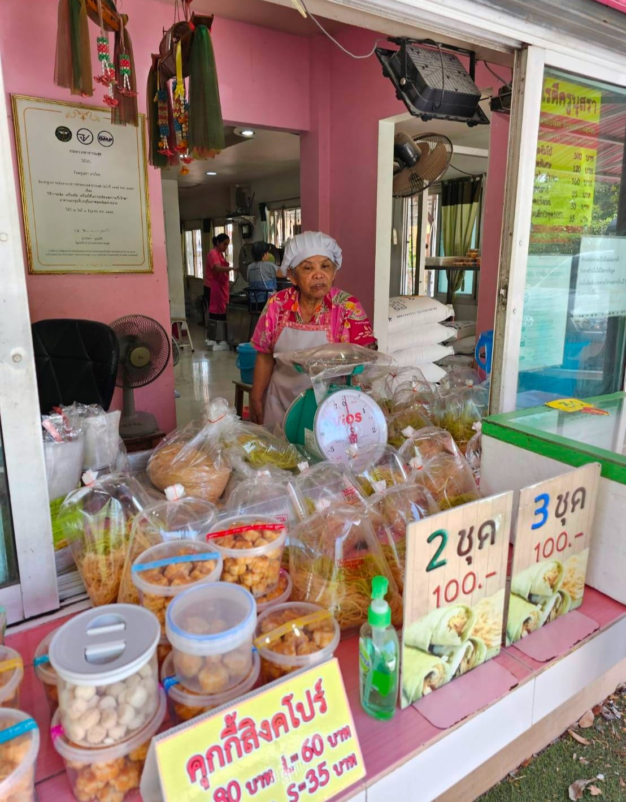
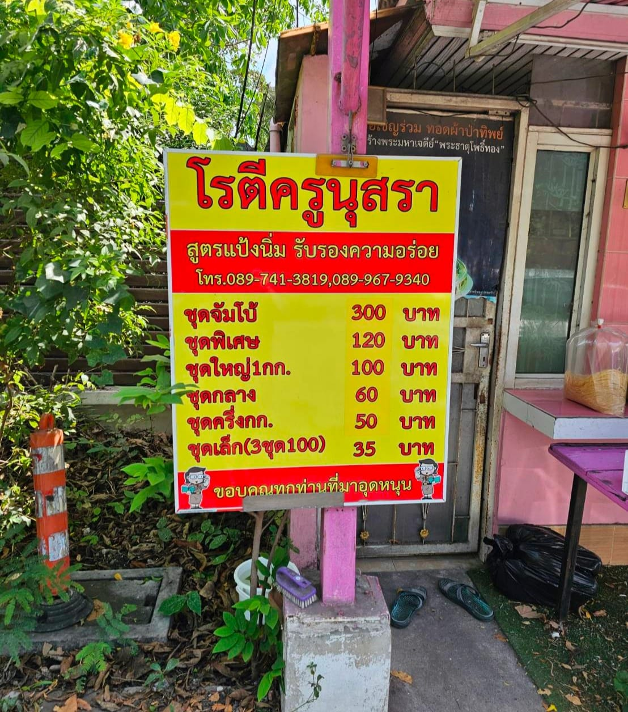
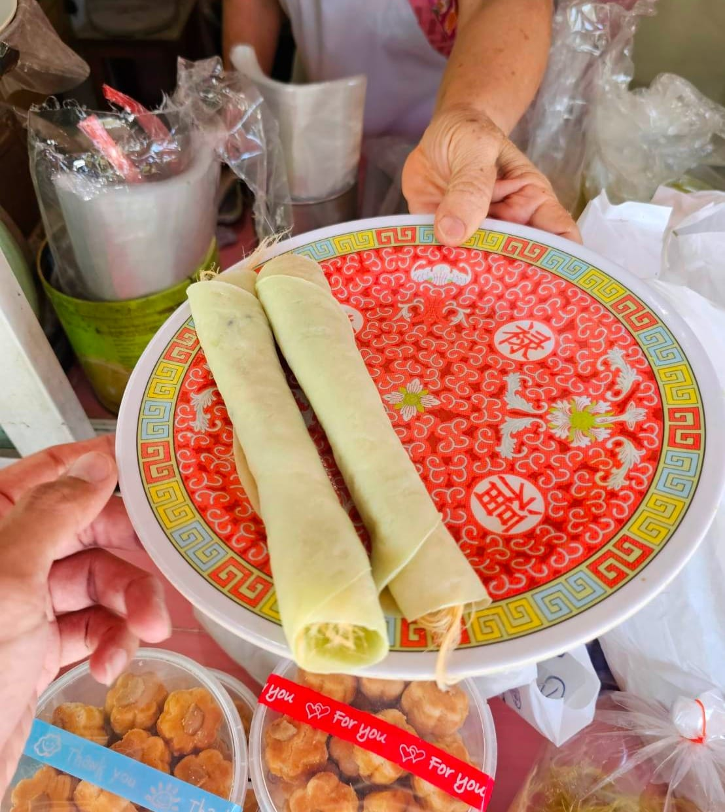
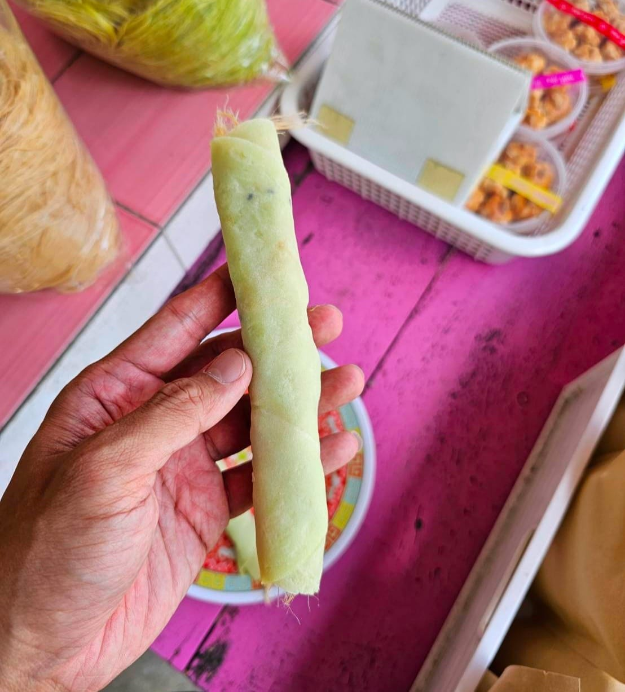
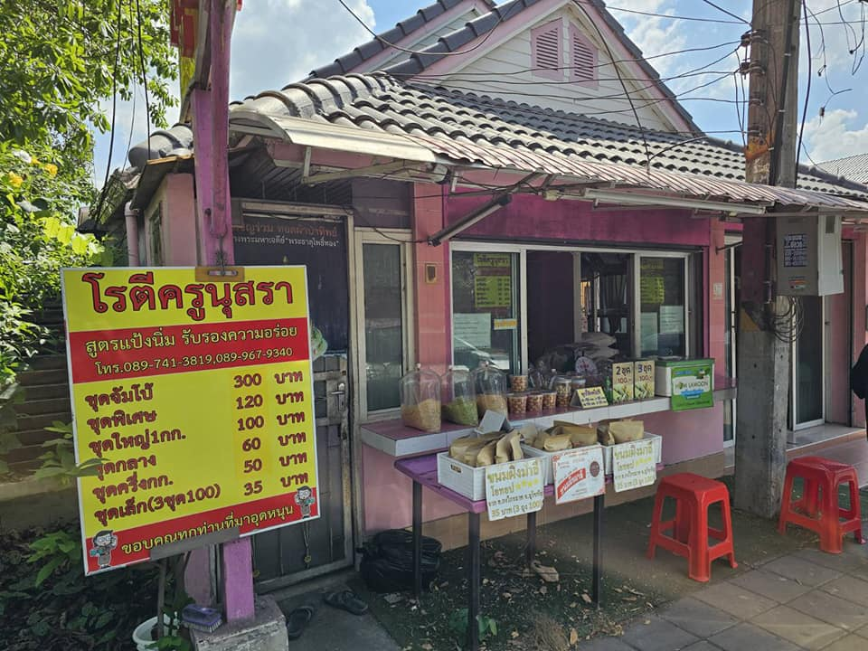

ตัวจัดการโฆษณา

ศูนย์โฆษณา

ฟีด
วีดีโอถ่ายทอดสด
รูปภาพ/วีดีโอ
ความรู้สึก/กิจกรรม
กินไปเหอะ
·ติดตาม
2 ชม.
·เวลาใครถามว่า ไปอยุธยา ซื้อโรตีเจ้าไหนดี? กุจะบอกตลอดว่า เลือกไปเถอะ 5555 บังดีน บังหมัด บังเอิญ เอาที่ชอบเลย 5555 กุว่ามันอร่อยใกล้ๆ กันแหละ ยิ่งไส้นี่แยกไม่ค่อยออก แต่อ้ะ แป้งนี่จะพอแยกได้
บางร้านแป้งบาง บางร้านแป้งหนา อย่างป้าป้อม แกก็จะมีโรยงามาให้ ส่วน ร้านครูนุสรานี่ ก็มีแป้งที่เด่นมาก ตรง ความนุ่ม... ดูเพิ่มเติม





1.7 พัน
164 ความคิดเห็น
แชร์ 278 ครั้ง